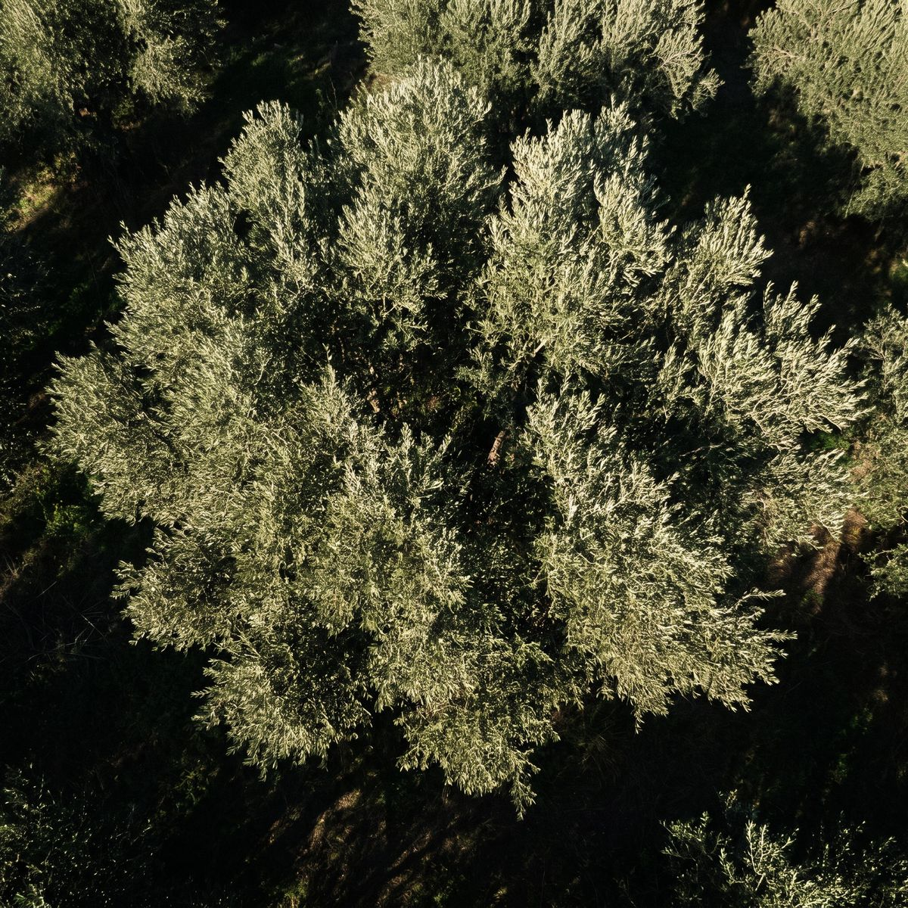

CasasPedro Silva
Para a sua casa, a fatura deixa de ser um mistério.
- Contrato de luz e gás, potência e ciclo horário
- Painéis no telhado e bateria, se compensarem
- Apartamentos e moradias
Também estudo consigo as instalações fotovoltaicas e as baterias. Cada cliente é acompanhado por mim, do primeiro contacto até a solução estar a funcionar.

Cada cliente gasta energia à sua maneira. A solução também tem de ser sua.
Da fatura ao telhado.
Comparo ofertas com o seu consumo real e revejo a potência contratada e o ciclo horário. As contas ficam à vista.
Confirmo o escalão, comparo ofertas e vejo se compensa ter luz e gás juntos ou em separado.
Estudo a instalação a partir do seu consumo e da sua cobertura e ajudo a comparar propostas. Se não compensar, digo-lhe.
Vejo quanta energia produzida fica por aproveitar e se uma bateria se paga a tempo de valer a pena.
Autoconsumo coletivo, comunidades de energia, venda de excedentes. Explico o que existe e o que se aplica ao seu caso.
O trabalho começa num documento que já tem em casa. Estas são as linhas que olho antes de falar em mudar seja o que for.
Paga-se todos os dias, gaste ou não. Vejo se a sua pode baixar sem o quadro disparar.
Simples, bi-horário ou tri-horário. Só compensa se consumir nas horas certas, e isso vê-se nas contagens.
Quanto gasta e a que horas. É a partir daqui que se dimensiona uma instalação solar ou uma bateria.
O preço muda com o consumo anual. Confirmo se o escalão e a oferta fazem sentido para o que gasta.
Pouco mudam de oferta para oferta. Deixo-os de lado para comparar aquilo que realmente se pode negociar.
Eletricidade
Gás natural
Outros
Valores inventados, só para mostrar onde estão as coisas. A sua fatura pode ter outra ordem.
Gastar melhor faz bem à conta e ao ambiente.
Se o melhor for ficar como está, é isso que lhe digo.
Da rede ao seu telhado, explico cada passo sem complicar.
Conta-me o que o preocupa e envia-me as últimas faturas de luz e gás.
Leio os contratos e o consumo. Se fizer sentido, vejo também a cobertura e o potencial solar.
Explico o que mudar, o que deixar como está e o que cada opção implica. A decisão é sua.
Trato consigo da mudança de contrato ou da instalação e continuo disponível depois.
Quatro situações frequentes, para perceber o que analiso em cada uma e com o que fica no fim.
Apartamento onde a fatura sobe e ninguém sabe porquê.
Moradia com telhado livre a pensar em painéis.
Restaurante com picos ao almoço e ao jantar.
Vários locais, vários contratos e datas diferentes.
Sou o Pedro Silva, consultor na área ambiental, com 15 anos de experiência. Trabalho com eletricidade, gás e energias renováveis, e acompanho cada cliente pessoalmente, seja uma família ou uma empresa.
Leio as faturas, explico as opções sem termos técnicos a mais e continuo disponível depois de a mudança estar feita.
Não. Às vezes basta ajustar a potência ou o ciclo. Às vezes o melhor é ficar como está.
Não. Muda quem lhe passa a fatura. A rede e o contador continuam iguais.
Não. Dependem do que gasta, a que horas e da cobertura. Faço as contas antes de lhe recomendar o que quer que seja.
Depende de quanta energia injeta na rede e do preço da bateria. Vejo os dois números consigo.
Pode haver caminho, com autoconsumo coletivo ou uma comunidade de energia. Vejo o que se aplica ao seu prédio.
As últimas faturas de luz e gás. Se for uma empresa, as de cada local.
Quem lê e responde sou eu. Se já tiver a última fatura à mão, melhor.